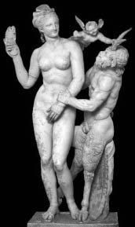

Troya fatihi ve Mükene kralı Agamemnon'un soyu konusundaki söylenceler çok çeşitliydi. Kimilerine göre ta Baştanrı Zeus'a dek uzanıyordu soyu!.. Bazı tarihçiler de onun işkenceci kral Tantalos'un soyundan geldiğini ileri sürüyorlardı.
Agamemnon, zaman içinde Yunanistan'daki yüzlerce kent krallıklarının başı olmayı becerdi. Sparta kralı Menelaos da onun kardeşiydi. Bu iki kardeş aynı zamanda bacanaktılar da! Çünkü Meneleos, o ünlü güzelliğiyle tanrıçaları bile kıskandıran güzel Helena'yla evliydi. Agamemnon da onun kız kardeşi Klütaymestra'yla (Klytaimestra)...
Krallar kralı Agamemnon'un söylediğine göre, kendisi aynı zamanda yeryüzünde Baştanrı Zeus'un temsilcisiydi... Hatta elindeki krallık değneğini bile o armağan etmişti!.. Bu krallar kralı; ülkesini daha da genişletme, sarayını tıka basa dolduracağı güzel kadınlar, ziynetler devşirip getirme sevdasındaydı hep. Zaten bu yüzden de komşu Troya krallığının hazineleri ve güzel kadınları durmadan uykularını kaçırıyordu. Gene bu yüzden, buyruğundaki bütün kralları kendi çevresinde kenetlendirecek bir savaş nedeni yaratması için Baştanrı Zeus'a gece gündüz yalvarıp yakarıyor; onun onuruna sık sık kurbanlar kestiriyordu. Gerçekten de duaları gerçekleşti ve bir savaş nedeni kendiliğinden oluşuverdi... Ne var ki bu savaş nedeni çok çetrefil olaylar içinde oluştu...
Bir gün Olimpos'taki tanrılar, kendi aralarında bir düğün şöleni düzenlemişlerdi. Tanrılar tarihinde ilk kez Baştanrı Zeus; deli divane tutkun olduğu ayağı gümüş halhallı tanrıça güzel Tetis'i, ölümlü bir insan olan kral Peleus'la evlendiriyordu içi yana yana. Çünkü çok sevdiği bu tanrıçayla ilişkiye girerse, doğacak çocuk ileride kendi tahtına kurulacağı yollu bir duyum almıştı bir yerlerden. Böyle bir olasılığı düşünmek bile onu uykularından ediyordu. O yüzden Olimpos'taki sarayında düzenlediği bu düğün şöleninde, tanrıça Tetis'i bir dünyalıyla başgöz ediyordu.
Kesinlikle bir tatsızlık çıkaracağı bilindiği için çağrılmayan kavga tanrıçası Eris dışındaki bütün tanrı ve tanrıçalar, Zeus'un sarayında eğleniyorlardı. Eğlencenin tam ortasında tanrıça Eris, bu düğüne çağrılmamasının acısını çıkarmak için yapacağını yaptı! Baştanrı Zeus'un masasının üstüne havadan bir altın elma düşürüverdi! Masadaki Zeus'un karısı tanrıça Hera ve kızı Atena hemen elmayı kaptılar! Üzerinde; "Baştanrı Zeus bu altın elmayı tanrıçaların en güzeline sunsun!" diye bir yazı vardı. Zeus, zıpkın yemişçesine bir süre donakaldı! Öyle ya, karısı tanrıça Hera da, kızı Atena da kendilerini tartışmasız evren güzeli sayıyorlardı. Üstelik sonradan Olimpos'a gelen, ama güzelliğiyle gerçekten evreni büyüleyen tanrıça Afrodit de Zeus'un masasındaydı. Bu altın elmayı hangisine verebilirdi ki! Bir süre düşündükten sonra, bu belalı seçicilikten kurtulmak için üç tanrıça arasında bir güzellik yarışması düzenlenmesini önerdi. Bu öneri hemen kabul edildi ve Troya kralının oğlu prens Paris'in de seçici olması uygun görüldü. Ve tanrıçalar arasındaki bu ilk evrensel güzellik yarışması, prens Paris'in çobanlık yaptığı Kazdağları'nda düzenlenecekti.
Yarışmaya katılan bu üç tanrıçadan her biri, birinci seçilme karşılığında bir rüşvet önermek üzere gizli gizli Paris'in Kazdağları'ndaki çoban kulübesine gitti. Kulübeye ilk giden Zeus'un karısı tanrıça Hera, bütün Asya kıtasının imparatorluğunu sundu Paris'e rüşvet olarak. Ne var ki Paris öyle mal-mülk delisi değildi. Troya ülkesi, hem halka hem kendine çoktan yetip artıyordu... Daha sonra giden tanrıça Atena da, girdiği her savaşta bir başarı ve bütün dünyaya yayılacak ün ve şan önerdi... Paris bu rüşvete de gülüp geçti içinden, çünkü ülkesinin onu tanıması bile yeterliydi... Zaten oldum olası hiç sevmiyordu savaşları. En sonunda tanrıça Afrodit geldi kulübesine. Ve Paris, tanrıçayı görünce çarpılmışa döndü! Çünkü Afrodit'in yanındaki görünmeyen aşk tanrısı yaramaz Eros, elindeki yayla onun yüreğine aşk okları salıyordu durmadan... Tanrıça, çoban Paris'in önünde şal ve entarisini savuraraktan bir oyuna başlar gibi kırıttı; birkaç kez havada takla attı... Ve Paris'in başı döndü! Sonra da tanrıça Afrodit; "İşte, sana benim kadar alımlı olan Yunanistanlı güzel Helena'nın aşkını öneriyorum!" dedi usulca kulağına ve çekip gitti...

Afrodit, tanrı Pan ve Eros
Bir süre sonra Kazdağları'nda, Baştanrı Zeus'un ve tekmil tanrıların huzurunda düzenlenen ilk evrensel güzellik yarışmasında Paris, tanrıça Afrodit'in tanrıçaların en güzeli olduğunu açıklayıverdi!.. Böylece evren güzeli seçilen Afrodit de, bir ara Yunanistan'a giden Paris'e verdiği sözü tutmak üzere Eros'u görevlendirdi. Eros da aşk okları gönderip Yunanistan'daki güzel Helena'yı Paris'e deli divane âşık etti... Ve Helena da apar topar Paris'le kaçıp Troya sarayına gelin geldi... Ne var ki bu olayın hemen ardından Yunanistanlı Başkral Agamemnon, güzel Helena'nın zorla kaçırıldığını öne sürdü. Bu konuda Baştanrı Zeus'la birkaç kez konuştuğunu söyledi. Ve Zeus'un kendisini Helena'nın namusunu temizlemekle görevlendirdiğini açıkladı. Bu nedene dayanaraktan kent krallıklarından topladığı ordularla, Troya surlarına dayandı...